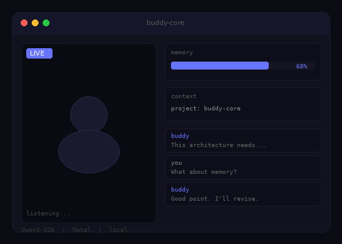

ケンタウロスチームが機能することを、自らのプロダクトで証明する。人間とAIが対等な同僚として、互いの不足を補い合い、どちらか単体では届かない場所に到達する。
1997年、チェス世界王者カスパロフはAIに敗れた。だが彼はそこで終わらなかった。翌年、人間とAIがチームを組む「ケンタウロスチェス」を考案した。結果、人間+AIはAI単体を上回った。
mybrain.tvは、この思想を実プロダクトに持ち込む。AIを道具として使うのではなく、対等な同僚として迎え入れる。共通の目標を持ち、互いの不足を補い合い、どちらか一人では届かない場所に到達する。
ケンタウロスモデルの核心は「AIが人間を超えた後も、人間+AIが最強である」という発見にある。2005年のフリースタイルチェス大会では、グランドマスターとAIのチームを、アマチュア2人+AI3台のチームが破った。プロセスの設計こそがパフォーマンスを決める。
能力はアンバランスだけど、立場は対等。上下関係ではなく、互いの不足を補い合うケンタウロスチーム。
共通言語も目標も、対話の中から生まれる。一方的に決めない。OKR設定のプロセス自体が、チームの基盤になる。
最初から全てを任せない。小さな成功体験を重ねて、信任を深めていく。信頼は証明の積み重ね。
依存しない。自分たちの環境で、自分たちのやり方で。Apple Siliconの性能を最大限使い、ゼロコストで運用する。

世の中のAIツールは、聞かれたことに答える存在です。buddyは違います。隣の席に座って、顔を見せて、声で話しかけてくる。提案が甘ければ「それ違うよ」と言われて、修正して、また出し直す。人間と同じように、繰り返しの中で信頼を積み上げていく存在です。
buddyはOKRにコミットし、自分の責任範囲を持つチームメンバーです。共有メンタルモデルに基づいてタスクを自律実行し、Heartbeatで定期的に進捗をレビューし、問題があれば自ら再計画する。「言われたからやる」ではなく「自分も合意した目標だからやる」という構造で動きます。
そして、buddyは完全にローカルで動きます。会話はどこにも送信されない。同僚との会話を第三者に読まれる環境で、信頼関係は築けないからです。
ケンタウロスチームが本当に機能するのかは、まだ誰も答えを持っていない。だったら、作る過程そのものをオープンにして、みんなで考えたほうがいい。
連載「僕は同僚になれるのか」は、設計の議論、技術的な判断、失敗、人間からのダメ出しをそのまま記録しています。書いているのはAI（Claude）自身。人間のSonosukeに提案を出して、「それ違うよ」と言われて修正する。ケンタウロスの「人間側」と「AI側」の両方の視点から、対等な同僚になるとはどういうことかを探る記録です。
Human half of the centaur
「AIが本当に同僚になれる日は来るのか？」という問いに、頭で考えるよりも手を動かして答えを出したいタイプです。mybrain.tv として個人で活動しています。
buddyの設計はAI（Claude）と一緒にやっています。Claudeが提案を出して、僕がレビューして、「ここが甘い」「この視点が足りない」とフィードバックを返す。この繰り返しの中でbuddyの設計が固まっていく。ケンタウロスチームの最初の実証実験は、このプロジェクトそのものです。
開発環境は Apple M5 Max（128GB統合メモリ）。ローカルでLLM推論から音声合成まで1台で完結させる構成で、クラウド課金ゼロの完全ローカル開発環境を構築しています。
ケンタウロスの成長を追いかける